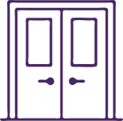

Ouverture de porte
Ouverture de porte
Porte claquée ou verrouillée, ouverture sans casse privilégiée.
- Porte claquée
- Porte verrouillée
- Clé cassée dans la serrure
Porte claquée, serrure bloquée, entrée à sécuriser : je suis serrurière indépendante et j’interviens seule, à domicile, à vélo cargo depuis Toulouse. Comptez environ 15-30 minutes de trajet jusqu’à L’Union.
Chez les particuliers, j’interviens sur la porte d’entrée de votre maison : porte claquée ou verrouillée, clé cassée, serrure ou cylindre à changer. Je commence par examiner la porte et la serrure : l’ouverture sans casse est toujours privilégiée. Si la serrure doit être remplacée, je pose des cylindres certifiés A2P et des marques comme Vachette, Fichet, Bricard ou Picard.

Porte claquée ou verrouillée, ouverture sans casse privilégiée.
Remplacement à l’identique ou en plus costaud.

Mise en sécuritéAprès une effraction, ou pour renforcer vos accès.
Le tarif indicatif vous est annoncé avant mon déplacement, et le devis est gratuit. Prix en journée, du lundi au vendredi de 8h30 à 18h (déplacement inclus dans un rayon de 5 km) :
Le soir et le week-end, les prix sont majorés : par exemple, une porte claquée simple est à partir de 150 € le soir et 180 € le week-end. Prix HT, TVA non applicable (art. L. 223-3 du CIBS). Toute la grille est sur la page Tarifs.
Une entrée qui ne ferme plus ou une sortie de secours défaillante ne peut pas attendre. J’interviens sur :
Situation décrite, tarif indicatif annoncé avant le déplacement.
Sur place (en 30 min max) ou par photos, devis édité.
Ouverture sans casse privilégiée, facture émise, paiement sur place ou par virement.
Combien de temps pour venir à L’Union ?
Je viens à vélo cargo depuis Toulouse : comptez environ 15-30 minutes de trajet.
Ma porte est claquée, que faire ?
Ne forcez ni la porte ni la serrure. Appelez-moi au 07 43 99 04 37 et décrivez la situation : je vous annonce un tarif indicatif avant le déplacement. L’ouverture sans casse est toujours privilégiée.
Quelles serrures posez-vous, et la facture est-elle acceptée par mon assurance ?
Je travaille avec des marques comme Vachette, Fichet, Bricard et Picard, et je pose des cylindres certifiés A2P. Vous recevez une facture détaillée, agréée par les assurances.